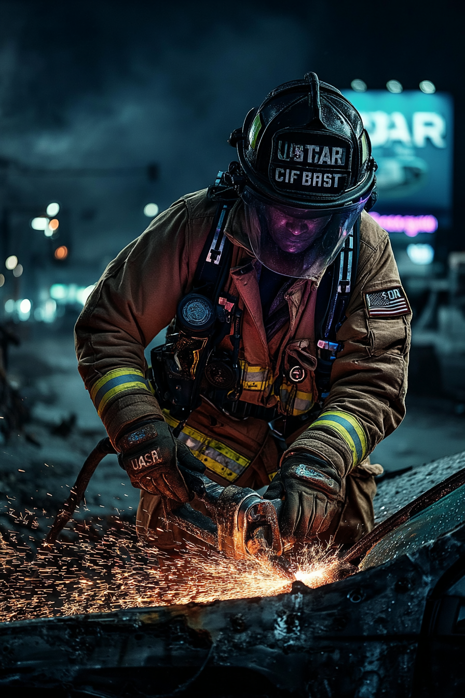

USAR KARRIÄR
15+ år av USAR-operationer från PA Task Force 1. Expert på structural collapse, confined space rescue, och breaching operations. FEMA CORE reservist sedan 2023 - Building Science & Safety Assessment Specialist. Deployerad vid katastrofer över hela USA.
"In trench rescue, you don't dig faster - you dig smarter."

FEMA URBAN SEARCH & RESCUE SYSTEM
Organisation: Federal Emergency Management Agency (FEMA/DHS)
System: National Urban Search & Rescue Response System (etablerat 1989)
Trenchs enhet: Pennsylvania Task Force 1 (PA-TF1)
Basering: Philadelphia Fire Department (sponsrande myndighet)
Utryckningstid: 6 timmar från aktivering
Operationell självständighet: Upp till 4 dagar utan externt stöd
Team-sammansättning
- Utryckningsteam: 70 medlemmar per operation
- Totala task force: 200+ medlemmar totalt
- Huvudorganisationer: Philadelphia FD, Harrisburg Bureau of Fire, Baltimore County FD
- Specialiseringar: Search, Rescue, Medicine, Hazmat, Logistics, Planning
Karriärväg (2007-2025)
- 2007: Brandkårsakademin, direkt från high school
- 2007-2010: Ordinarie brandtjänst, Pennsylvania
- 2012: Antagen till PA-TF1, specialiserad USAR-träning
- 2012-2022: USAR-specialist, samarbete med Robert Chen
- 2022: Pittsburgh-incidenten, Robert Chen KIA
- 2022-2023: Fortsatt PA-TF1 + Delta Green rekrytering
- 2023-Nuvarande: FEMA CORE Reservist + PA-TF1 (deltid) + Delta Green-operatör
FEMA CORE RESERVIST (2023-Nuvarande)
Position: Building Science/Safety Assessment Specialist
Program: Cadre of On-Call Response/Recovery Employees (CORE)
Status: Federal anställd, på-uppdragsbasis
Clearance: Federal security clearance upprätthålls
Vad är FEMA CORE?
- På-uppdragsbasis federala anställda som deployeras vid katastrofer nationellt
- Tillfälliga uppdrag: 30-180 dagar per år (oregelbundet)
- Betald endast under utryckning: $3,000-$5,000/månad
- Federal credentials giltiga hela tiden
- Kan ha bas var som helst - perfekt för mobil livsstil
- Många USAR Task Force-medlemmar arbetar också som CORE
Sams Specialisering
Building Science & Safety Assessment:
- Byggnadsäkerhetsinspektioner efter katastrofer
- Strukturell skadeutvärdering och kategorisering
- Preliminära skadebedömningar (PDA) för federala katastrofdeklarationer
- Safety Assessment Program (SAP)-utvärderingar
- Rekommendationer för riskmitigering
Typiskt År (2024-2025)
| Aktivitet | Frekvens | Dagar/År |
|---|---|---|
| FEMA CORE Utryckningar | 3-4 uppdrag | 90-120 dagar |
| PA-TF1 Operationer | 1-2 utryckningar + träningar | 30-45 dagar |
| Delta Green Operationer | 2-3 uppdrag | 20-30 dagar |
| "Standby" (DG förberedelse/forskning) | Mellan uppdrag | 170-225 dagar |
FEMA CORE Utryckningar (2023-2025)
- Mars 2023: Mississippi tornado outbreak - Byggnadsbedömningar, Rolling Fork-området (45 dagar)
- Augusti 2023: Hawaii wildfire recovery - Maui strukturell skadeutvärdering (60 dagar)
- Nov 2023: Kentucky flooding - PDA-team, Eastern Kentucky (30 dagar)
- Maj 2024: Oklahoma tornado damage - Säkerhetsbedömningar, Moore/Norman-området (35 dagar)
- Sept 2024: Hurricane Helene - North Carolina/Tennessee byggnadsinspektioner (50 dagar)
- Jan 2025: California atmospheric river flooding - Preliminär skadebedömning (pågående)
Delta Green Täckhistoria: FEMA CORE-rollen är PERFEKT täckmantel för Delta Green-operationer. Förklarar:
- Varför Sam är var som helst i USA vid given tidpunkt
- Federal credentials och security clearance
- Oregelbunden inkomst och anställningsluckor
- Mobil livsstil med campervan
- Tillgång till katastrofplatser och begränsade områden
- Expertis i strukturella skador och ovanliga byggnadshaverier
Mellan FEMA-uppdrag = fullständig flexibilitet för Delta Green-uppdrag.
Varför FEMA CORE?
Officiell Berättelse (till familj/vänner):
"Började under pandemin när FEMA behövde extra folk. Insåg att jag var deployerad så mycket att det var smartare att ha flexibel federal anställning istället för fast heltid. Betalar bättre per dag, och jag kan välja uppdrag. Kombinerar det med PA-TF1 när de behöver mig."
Verklig Anledning:
Delta Green-aktiviteter kräver total flexibilitet. FEMA CORE ger legitim federal täckmantel, förklarar ständiga resor, och skapar luckor i schemat där DG-operationer kan ske utan misstankar. Perfekt operationell säkerhet.
PRIMÄRA ARBETSUPPGIFTER
Strukturella Räddningsoperationer
- Lokalisera och extrahera offer ur kollapsade byggnader
- Repräddning i höghusoperationer
- Instängd rymd-räddning (trånga utrymmen, hålrum, kollapsade strukturer)
- Schakt-/utgrävningsräddning (därav callsign "Trench")
- Fordon och maskinutvinning
- Vattenoperationer och översvämningsräddning
Strukturell Bedömning & Analys
- Bedöma byggnaders säkerhet och stabilitet efter katastrofer
- Identifiera strukturtyper och specifika skador
- Rekommendera hazard mitigation-åtgärder
- Markera byggnader med säkerhetsnivåer:
- Grön: Säker att bebos
- Gul: Begränsat tillträde
- Röd: Osäker - Inget Tillträde
Stabiliseringsoperationer
- Shoring: Installera tillfälliga strukturella stöd
- Cribbing: Bygga träkonstruktioner för att stabilisera tunga objekt
- Bracing: Förstärka svaga väggar och strukturer
- Övervaka strukturer för förändringar över tid
Demolitioner & Inträngning
- Kontrollerade sprängningar för att:
- Ta bort farliga strukturer
- Skapa tillgång till inneslutna offer
- Öppna räddningsvägar
- Precisionsskärning med hydrauliska verktyg
- Strukturell inträngningstekniker
Delta Green Relevans: Demolitions-expertis gör Trench värdefull för att förstöra bevis, kollapsa anomala strukturer, och iscensätta naturliga förklaringar för onaturliga händelser.
Tung Maskinutrustning
- Operera kranar och lyftutrustning
- Hydrauliska räddningsverktyg (Jaws of Life, spreaders, cutters)
- Tung utrustning (bulldozers, excavators vid större operationer)
- Specialiserad skärutrustning (concrete saws, plasma cutters)
Medicinsk Akutvård
- Akut traumavård på katastrofplatser
- Vård för instängda offer under utvinning
- Medicinsk vård för task force-medlemmar
- First Aid 80% - Högsta kompetensen i Chesapeake Cell
BEFOGENHETER & AUKTORITET
Federal Utrykningsauktoritet
När FEMA aktiverar PA-TF1:
- Opererar under federal auktoritet via Stafford Act
- Mellanstatliga operationer utan delstatsbegränsningar
- Direkt åtkomst till federala resurser och utrustning
- Rapporterar till FEMA/DHS, inte lokal myndighet
- National Special Security Event (NSSE) clearances
Operationell Auktoritet på Plats
| Område | Befogenhet |
|---|---|
| Strukturell Auktoritet |
• Evakuera byggnader bedömda som instabila • Markera byggnader "unsafe" (tillträdesförbud) • Neka åtkomst till farliga strukturer • Åsidosätta lokala byggnadsinspektörer vid federal nödsituation |
| Fastighetskontroll |
• Stänga av gas, el, vatten utan fastighetsägarens tillstånd • Nödavstängning av försörjningssystem vid omedelbar fara • Koordinera med försörjningsbolag för permanenta lösningar |
| Platskontroll |
• Upprätta hot zones och säkerhetsperimetrar • Kontrollera åtkomst till kollapsplatser • Koordinera med lokala förstainsatser • Semi-autonoma operationer inom katastrofområde |
Delta Green Operationell Fördel:
Trench kan legalt förklara områden "unsafe" och evakuera civila, etablera perimetrar, och stänga av försörjningssystem – allt under täckmantel av legitima USAR-operationer. Detta ger Delta Green rimlig förnekbarhet och operationell åtkomst utan att väcka misstankar.
Juridiskt Skydd
- Federalt Skydd: Ansvarsskydd under Stafford Act när federalt deployerad
- Good Samaritan-skydd för medicinska ingrepp
- Immunitet för nödåtgärder inom uppdragets omfattning
- Skydd mot delstatsåtal för federala operationer
NOTABLA UTRYCKNINGAR - PA-TF1
Sams Utryckningshistorik (2012-2025)
| År | Operation | Beskrivning |
|---|---|---|
| 2012 | Hurricane Sandy | New Jersey, vattenräddningar och strukturell bedömning. Sams första federala utryckning. |
| 2015 | Byggnadskollaps Philadelphia | Sex våningar kollapsade efter påkörning. Sam och Robert extraherade 8 överlevande. |
| 2016 | West Virginia-översvämningar | Tre veckors utryckning, omfattande vattenräddningsoperationer. |
| 2020-2021 | COVID-19 Respons | Fältsjukhus, massgravar, karantänzoner. Flera insatser efter varandra. Började Sams psykiska förfall. |
| 2022 | Pittsburgh Tunnel Collapse | Rekryteringsincident. 12 dagar instängd. Robert Chen KIA. Delta Green-kontakt. |
PA-TF1 Stora Federala Aktiveringar (Historik)
- 1999: Hurricane Floyd (North Carolina) – PA-TF1:s första federala utryckning
- 2001: World Trade Center-attacken (New York) – Ground Zero sök & återhämtning
- 2005: Hurricane Katrina/Rita (Gulf Coast) – Massiva vattenräddningsoperationer
- 2008: Hurricane Ike/Gustav (Texas/Louisiana)
- 2025: Texas-översvämningar (Nyligen) – Flerstatligt stödteamledarskap
TRÄNING & CERTIFIERINGAR
Grundutbildning
- Initial USAR-träning: 100 timmar strukturell collapse rescue
- Årlig recertifiering: Kontinuerlig träning genom PA-TF1
- Specialiserad positionsträning: Demolitions, tung maskinutrustning, teknisk räddning
Specialiseringar
- Strukturell Kollapsräddning (avancerad)
- Repräddningstekniker
- Instängd Rymd-räddning
- Schakt- och Utgrävningsräddning
- Tunga Riggoperationer
- Farliga Material-medvetenhet
- Weapons of Mass Destruction (WMD)-medvetenhet
Medicinsk Träning
- Emergency Medical Technician (EMT) certifierad
- Wilderness First Responder (för långvariga fältoperationer)
- Traumavård under extrema förhållanden
- Stridssjukvårdsprinciper
OPERATIONELLA BEGRÄNSNINGAR
Aktiveringskrav
- Kräver verklig (eller iscensatt) katastrof för full federal auktoritet
- Kan inte fritt deployera utan FEMA-aktivering
- Långvarig frånvaro från dagsjobb kräver täckning/ursäkter
Offentlig Profil
- USAR-utryckningar är offentlig kännedom (mediebevakning)
- Kan inte operera helt dolt när officiellt deployerad
- Spårad av FEMA-operationskommando
- Utrustningsanvändning loggad och granskad
Expertisgränser
- Strukturellt fokus - inte utredare som Mac
- Praktiska demolitioner, inte sofistikerad sprängexpert
- Grundläggande elektronik (50%), inte teknikspecialist som Sparky
- EMT-nivå medicin, inte läkare som fullt medicinskt team
Täckhistoria Bästa Praxis:
Sam använder "personlig tid" och "träning" för Delta Green-operationer. Han hävdar FEMA-utryckning endast när absolut nödvändigt. USAR-utrustning/fordon är distinkt och kan inte användas för dolt arbete utan att väcka frågor.